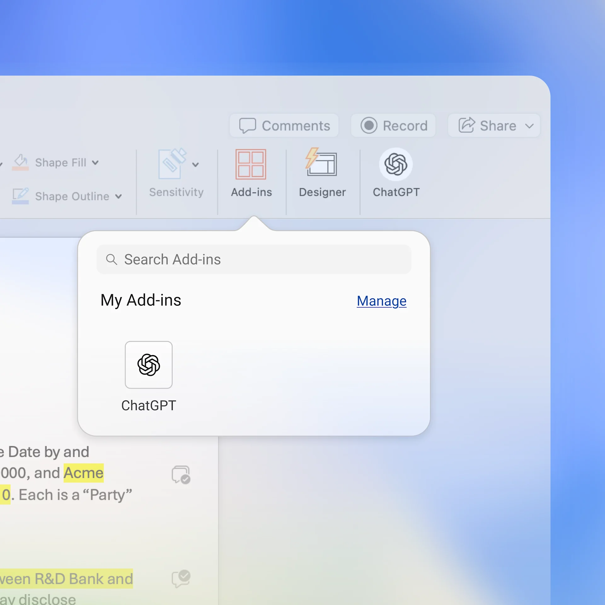
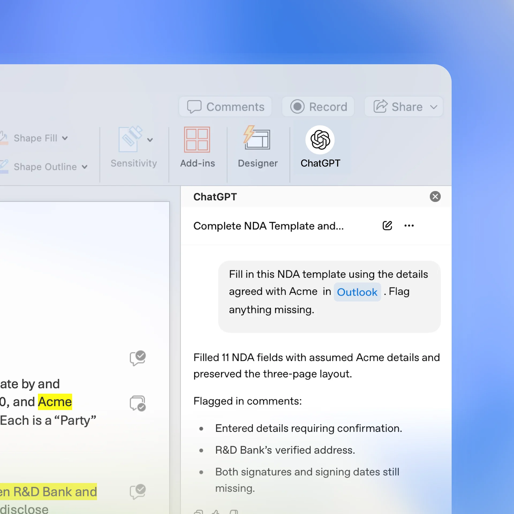
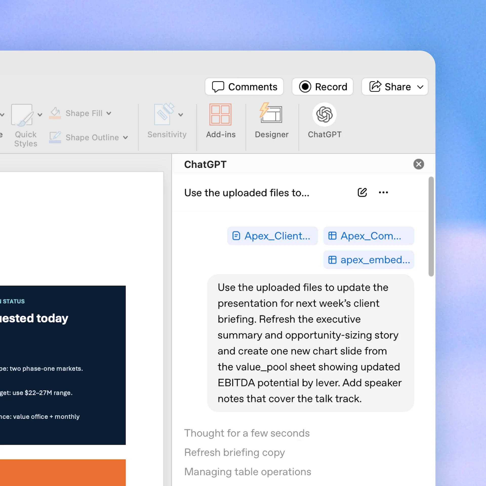

1. Какой способ работы выбрать
Надстройка - дополнительная панель внутри программы. Ты открываешь документ и разговариваешь с ChatGPT рядом с ним. Официальная надстройка Microsoft общая для Word, Excel и PowerPoint; возможности внутри программ различаются.
| Способ | Когда удобен | Где появится результат |
|---|---|---|
| Прикрепить файл в ChatGPT | Разовый разбор и вопросы | В чате или новом файле |
| Поручить работу в Work | Собрать комплект из нескольких источников | В созданных документах, таблицах, презентациях |
| Открыть надстройку Office | Изменить текущий документ | В открытом файле |
| Подключить Excel к Codex | Совместить открытую книгу, папку и обработку данных | В книге Excel и дополнительных файлах |
ChatGPT и Microsoft Copilot - разные продукты. Кнопка Copilot не означает, что подключён твой ChatGPT. Подписка Microsoft 365 и тариф ChatGPT тоже учитываются отдельно.
Для занятия понадобятся: свой аккаунт ChatGPT, поддерживаемый доступ к сервису, установленная совместимая программа Office либо поддерживаемая веб-версия, интернет и учебный файл. На рабочем компьютере надстройки может включать администратор.
Начинай с копии. Сохрани «Бюджет_учебный.xlsx», «Письмо_учебное.docx» или «Доклад_учебный.pptx». Попроси сначала описать документ. Только после этого поручай изменения.
Источники: Word, Excel, PowerPoint.
2. Где искать кнопку установки
На актуальной ленте Office ищи Home / Главная → Add-ins / Надстройки. В некоторых версиях Windows доступен File / Файл → Get Add-ins / Получить надстройки. В части интерфейсов используется вкладка Insert / Вставка → My Add-ins / Мои надстройки. Если меню отличается, используй прямую ссылку на официальную карточку ниже.

Как читать рисунок: Add-ins - вход в надстройки; Search Add-ins - поиск; My Add-ins - уже установленные; ChatGPT - нужная панель. Это официальная иллюстрация OpenAI, а не снимок твоего компьютера. Язык и расположение могут отличаться.
Источники: иллюстрация OpenAI, меню надстроек Microsoft.
3. Установка на Windows и Mac: общий порядок
- Открой Excel, Word или PowerPoint и новый учебный файл.
- Открой Add-ins / Надстройки. Если видишь только свои надстройки, выбери More Add-ins / Другие надстройки или магазин.
- Найди ChatGPT. Проверь издателя OpenAI. Похожие названия сторонних разработчиков не являются официальной интеграцией.
- Нажми Add / Добавить либо Get it now / Получить.
- Открой ChatGPT с верхней ленты. Справа должна появиться панель.
- Войди в свой аккаунт ChatGPT. Если используешь организацию, выбери нужное рабочее пространство.
- Попроси описать открытый файл, не изменяя его.
Прямая ссылка: официальная надстройка ChatGPT в Microsoft Marketplace.
Нюансы Windows
Если не открывается окно входа, проверь обновления Office и разрешённые надстройки. В корпоративной среде ошибку единого входа должен разбирать администратор. Не отключай защиту Office целиком, чтобы заставить работать одну панель.
Нюансы Mac
Ищи надстройки в ленте конкретной программы, а не в общесистемных настройках macOS. При отличающемся меню открой карточку Marketplace и следуй предложенному способу добавления. После установки при необходимости закрой и снова открой панель.
Если открыть файл можно, а редактировать нельзя: проверь режим «только чтение», защищённый просмотр, права на файл и статус лицензии Office. ChatGPT не отменяет эти ограничения.
Источники: установка Excel, установка Word, Microsoft Office Store.
4. Excel: первый безопасный опыт
Создай лист с колонками Дата, Категория, Описание, Сумма. Добавь 10-15 вымышленных расходов. Числа должны быть числами, а не текстом со словом «рублей» в каждой ячейке.
Шаг 1. Понять книгу
Опиши структуру открытой книги: листы, столбцы, используемые формулы и возможные проблемы. Ничего пока не меняй. Укажи, какие листы ты проверил.
Шаг 2. Сделать сводку
Создай отдельный лист «Сводка». Сгруппируй расходы по категориям, добавь итог и простую диаграмму. Исходный лист сохрани. Если есть пустые категории, вынеси их отдельно. Проверь, что сумма сводки совпадает с суммой исходных строк.
Шаг 3. Проверить
Сверь итог, одну категорию вручную и диапазон диаграммы. Проверь, что в сводку вошли все строки. Добавь одну новую строку и выясни, обновляется ли расчёт автоматически или нужен отдельный шаг.
Что надстройка может делать: помогать со структурой, формулами, форматированием, поиском дублей и объяснением чужой книги. Для сложных моделей уточняй ограничения конкретных объектов: макросы, внешние связи, защищённые листы и нестандартные диаграммы нельзя считать автоматически поддержанными.
Точная формулировка важнее магической команды: вместо «почисти таблицу» скажи, что считать дублем, как поступать с пустыми значениями и где сохранить исходник. Ноль и отсутствие данных не равнозначны.
Источник: ChatGPT для Excel.
5. Codex + открытый Excel
Этот сценарий нужен, если работа объединяет открытую книгу и файлы на компьютере. Например, добавить новую выгрузку в бюджет, проверить её и обновить отчёт.
- Установи новую настольную программу ChatGPT.
- Открой книгу Excel и панель надстройки ChatGPT.
- Проверь, что в надстройке и в Codex один аккаунт и одно рабочее пространство.
- В панели Excel открой ••• → Allow Codex control. По-русски это разрешение управления через Codex. Включи его для такого сценария.
- Оставь книгу и панель открытыми.
- В настольном ChatGPT выбери Codex, создай задачу и укажи @Microsoft Excel либо попроси найти открытую книгу.
Маршрут настройки, схематично:
Excel → панель ChatGPT → меню ••• → Allow Codex control → Codex → @Microsoft Excel.
Точная картинка этого переключателя не приведена: его расположение подтверждено справкой, но текущий вид зависит от версии надстройки. Не путай его с общим доступом Computer Use ко всем приложениям.
Найди открытую учебную книгу Excel. Сначала назови книгу и листы. Сравни новую выгрузку из выбранной папки с текущими строками, предложи правило удаления дублей. До согласования не удаляй данные. После изменений покажи количество добавленных строк и контрольные суммы.
Если открыто несколько книг, назови нужную явно. После работы сохрани и повторно открой результат. Прямой описанный сценарий управления открытой книгой подтверждён для Excel; не переноси его автоматически на Word и PowerPoint.
Источник: официальные шаги Codex + Excel.
6. Word: создать, сократить и привести к одному стилю
Открой учебный документ и ChatGPT на ленте. Для локальной правки сначала выдели нужный абзац. Для переработки всего документа сначала согласуй структуру.

Сократи выделенный фрагмент примерно на треть. Сохрани все даты, суммы и обязательства. Убери повторы, но не добавляй новые условия. После правки перечисли существенные изменения.
Проверка: не исчезли отрицания и исключения; номера и даты сохранены; заголовки и таблицы выглядят правильно. Сложное форматирование может потребовать ручной доработки.
Надстройка работает с открытым документом. Не рассчитывай, что она автоматически найдёт соседний файл на компьютере: добавь нужный текст или используй доступное подключение. Чаты надстройки отделены от обычной истории ChatGPT; память не переносится автоматически.
Источники: Word: возможности и ограничения, официальная иллюстрация.
7. PowerPoint: от плана к слайдам
Открой копию презентации. Нажми ChatGPT на ленте. Сначала попроси оценить логику: для кого доклад, какой главный вывод, что повторяется. Затем задай изменения слайдов.

На рисунке видны ChatGPT на верхней ленте и ••• в боковой панели. Меню ••• содержит действия этого интерфейса; не все пункты совпадают с Excel.
Проверь презентацию для выступления на семь минут. Сначала предложи, какие слайды объединить. После согласования сократи текст, сохрани цифры и источники. Добавь заметки выступающего. Не меняй фирменные цвета и логотип.
Источники: PowerPoint, официальная иллюстрация.
8. Готовые кейсы для каждого приложения
| Приложение | Жизненная задача | Что попросить | Что проверить |
|---|---|---|---|
| Excel | Семейные расходы | Категории, сводка месяца, контрольная сумма | Возвраты, переводы между счетами, дубли |
| Excel | План ремонта | Сравнение смет и график платежей | Одинаковый состав работ и единицы |
| Excel | Учёт заказов | Статусы, сроки, просрочки | Правила даты и фактические статусы |
| Word | Инструкция для помощника | Превратить заметки в последовательные шаги | Ничего важного не пропущено |
| Word | Коммерческое предложение | Структура, ясность, единый тон | Цена, объём работ, обязательства |
| Word | Памятка для гостей | Короткие разделы и понятные действия | Адреса, время, контакты |
| PowerPoint | Итоги месяца | Шесть слайдов: результат, факты, вопросы | Цифры и выводы подтверждаются |
| PowerPoint | Семейное мероприятие | Программа, роли, список подготовки | Нет личных данных в публичной версии |
| PowerPoint | Учебное выступление | Пример, объяснение, упражнение | Читаемость и соответствие времени |
Запрос для Word:
Преврати эти заметки в инструкцию для нового помощника. Дай цель, материалы, шаги, критерий готовности и действия при ошибке. Если шаг требует решения руководителя, отметь это. Не придумывай внутренние правила компании.
Запрос для PowerPoint:
Сделай шесть слайдов об итогах учебного проекта. На каждом - один вывод, до трёх коротких пунктов и одна подходящая визуальная идея. Используй только мои результаты. Отдельно укажи, где не хватает данных для диаграммы.
Запрос для Excel:
Добавь плановые и фактические расходы, абсолютное отклонение и процент. Для нулевого плана не дели на ноль: показывай понятное пояснение. Объясни формулы и проверь их на трёх примерах.
9. Тарифы и дополнительные расходы
| Тариф ChatGPT | Excel | Word | PowerPoint | Что учитывать |
|---|---|---|---|---|
| Free | Огр. | Огр. | Огр. | Подходит для короткого теста |
| Go | Огр. | Огр. | Огр. | Не полный набор Work в облаке |
| Plus | Да | Да | Да | Работа расходует доступный лимит |
| Pro 100 | Да | Да | Да | Больше использования |
| Pro 200 | Да | Да | Да | Выше лимиты, чем у Pro 100 |
| Pro 500 | Да | Да | Да | Самый большой объём среди Pro |
| Business Standard / Premium | Да* | Да* | Да* | Рабочее пространство и политика организации |
| Enterprise / Edu | По условиям | По условиям | По условиям | Доступ и учёт определяет организация |
*Администратор ChatGPT и администратор Microsoft 365 могут управлять доступом отдельно. «Да» не означает безлимит.
Надстройки могут использовать общий запас Work/Codex и других премиальных возможностей. Большая книга или презентация с многократными правками расходует его быстрее. Не путай тариф ChatGPT с лицензией Microsoft 365: подключение ИИ не покупает тебе Word, Excel или PowerPoint.
До оплаты проверь: программа запускается; панель устанавливается; аккаунт узнаётся; учебный документ читается; нужный инструмент доступен в стране использования. Платный план не снимает региональные ограничения.
На первом занятии достаточно маленького файла. Если лимит закончился, посмотри уведомление о восстановлении, а не создавай множество новых аккаунтов.
Источники: общие тарифы, Office и учёт использования, Word.
10. Если кнопка или документ недоступны
| Проблема | Возможная причина | Что сделать |
|---|---|---|
| Нет Add-ins | Другая лента или версия | Проверить Home, File, Insert и Marketplace |
| Надстройка не устанавливается | Правила организации | Обратиться к администратору Microsoft 365 |
| Нет нужного тарифа | Другой аккаунт | Проверить вход в панели ChatGPT |
| Codex не видит книгу | Закрыта панель или другой аккаунт | Открыть панель; проверить пространство и Allow Codex control |
| Файл не редактируется | Только чтение или защита | Проверить свои права и сделать разрешённую копию |
| Правка затронула лишнее | Недостаточно точное задание | Отменить доступным способом и сузить запрос |
| Итого не сходится | Дубли, диапазоны, формат чисел | Проверить исходные строки и формулы |
| Исчезло оформление | Сложные элементы документа | Сверить с копией и доработать вручную |
| Не работает вход организации | Настройка единого входа | Передать ошибку администратору |
Россия: надстройка не обходит ограничения самого ChatGPT. Смена региона магазина приложений не равна изменению фактической страны использования. Подробное объяснение и официальные шаги смены страны Apple/Google приведены в основном руководстве.
Если панель всё равно недоступна: сохрани учебный файл и попробуй прикрепить его в доступном Chat/Work. Это другой способ работы: изменения придут новым файлом, а не обязательно в текущем открытом документе.
Источники: неполадки Excel, поддержка стран.
11. Проверка перед сохранением и отправкой
Excel
- Исходник сохранён, понятны изменённые листы и диапазоны.
- Итоги сходятся, новые строки включены, дубли обработаны по согласованному правилу.
- Формулы остались формулами, единицы и валюты подписаны.
- Диаграммы соответствуют диапазонам, нет необъяснимых ошибок.
Word
- Имена, числа, даты, ссылки и обязательства сверены.
- Заголовки, нумерация, таблицы и переносы читаемы.
- Не появились неподтверждённые факты и нежелательные обещания.
PowerPoint
- Слайды укладываются в цель и время выступления.
- Текст читается, объекты не перекрываются, подписи не обрезаны.
- Источники указаны, данные графиков верны, заметки докладчика проверены.
Финальный запрос помощнику:
Перечисли, что ты изменил, что проверил и что не удалось проверить. Укажи файл результата. Не называй проверенным то, что ты только предположил.
Все изображения интерфейса в этом PDF - официальные иллюстрации OpenAI. Они показывают ориентиры интерфейса и не подтверждают наличие функции у каждого участника. Маршрут Allow Codex control показан текстовой схемой, поскольку точный вид переключателя на компьютере пользователя не проверялся.
Сохрани готовый файл под новым понятным именем. Открой его ещё раз и только потом отправляй другим людям.
Сохрани под рукой
В PDF есть этот же текст, изображения и кликабельное оглавление. Его можно читать без интернета.
Скачать руководство